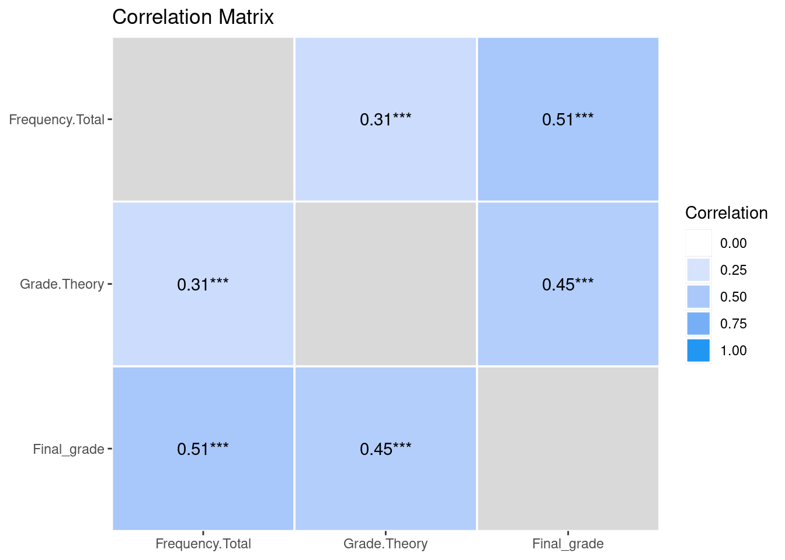
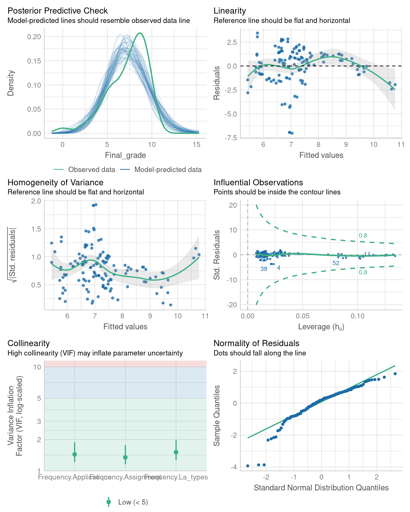
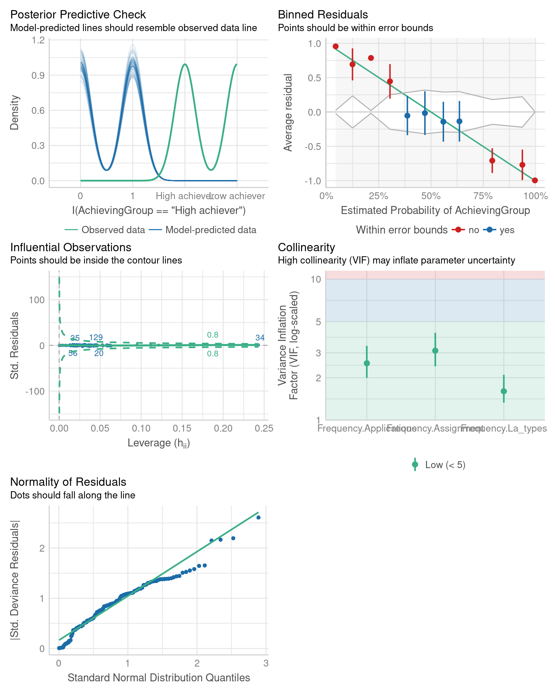

install.packages(
c("car", "rio", "see", "dplyr", "tidyr",
"broom", "report", "correlation", "performance")
)5 Introductory Statistics with R for Educational Researchers
Abstract
Statistics play a fundamental role in learning analytics, providing a means to analyze and make sense of the vast amounts of data generated by learning environments. This chapter provides an introduction to basic statistical concepts using R and covers topics such as measures of central tendency, variability, correlation, and regression analysis. Specifically, readers will learn how to compute descriptive statistics, conduct hypothesis tests, and perform simple linear regression analysis. The chapter also includes practical examples using realistic data sets from the field of learning analytics. By the end of the chapter, readers should have a solid understanding of the basic statistical concepts and methods commonly used in learning analytics, as well as a practical understanding of how to use R to conduct statistical analysis of learning data.
1 Introduction
Learning analytics involves the practical application of statistical methods to quantitative data, which can represent various aspects of the learning process such as student engagement, progress, and outcomes. Thus, knowledge about basic statistical methods is essential. Let’s start with how statistics connects with the research process and how it is also linked with philosophy of science. According to Niiniluoto [1], the research process can be described with the following eight steps:
- Setting up a problem.
- Disambiguation of the problem. Building a research strategy.
- Collecting data.
- Describing the data.
- Analysis of data.
- Interpreting the analyses.
- Writing the report.
- Publishing the results.
Steps 1 and 2 require knowledge and skills related to the applied field, but also general scientific aptitude. Knowledge about statistics is central in steps 3, 4, 5, and 6. Finally, steps 7 and 8 mostly require skills in writing and communication. Overall, it can be argued that a solid understanding of statistics and statistical methods is crucial for anyone conducting research with quantitative data.
This chapter of the book concentrates on steps 4, 5, and 6 of the research process. We start with descriptive statistics, which are statistics that describe the overall features of the data. In contrast, inferential statistics are used to draw conclusions and make inferences about the population under study. Afterwards, we explain the basics of statistical hypothesis testing, which is the most common — although not the only — way to analyze data. The most common statistical tests, such as Student’s t-test, Chi-squared test, Analysis of variance, Levene’s test, and Shapiro-Wilk test are covered in this chapter. We also explain how to interpret the results of each test. We also present the linear regression model, which is not a statistical test but one of the most powerful statistical tools. Basic understanding of linear regression is essential for anyone interested in more advanced regression techniques, including logistic regression which is covered in the final section of this chapter. For a more in-depth view on the statistical tests covered in this chapter, we refer the reader to works such as [2, 3].
2 Descriptive statistics
Descriptive statistics are used to provide a meaningful quantitative overview of data, and to summarize potentially vast amounts of information into more easily comprehensible and manageable quantities. In general, descriptive statistics are used as a first step in a data analysis workflow. In this section we will focus on numeric descriptors while visualizations are the topic of Chapter 6 [4]. For this chapter, we will use the combined Moodle data with students’ demographics, results, and summarized Moodle event activity. For more information about the dataset, please refer to Chapter 2 in this book [5]. We begin by installing all R packages that we will use in this chapter.
We use the rio [6] package to read the data files into R via the import() function. The Events dataset contains log data on the student’s Moodle activity such as Moodle event types and names. The Demographics dataset contains background information on the students such as their gender and location of study (categorical variables). Finally, the Results data contains grades on various aspects of the Moodle course including the final course grade (numeric variables). We also create a new variable called AchievingGroup that categorizes the students into bottom and top 50% of achievers in terms of the final grade. We will leverage the dplyr [7] and tidyr [8] packages to wrangle the data into a single combined dataset. We begin by reading the data files and by constructing the AchievingGroup variable.
library("rio")
library("dplyr")
library("tidyr")
url <- "https://github.com/lamethods/data/raw/main/1_moodleLAcourse/"
events <- import(paste0(url, "Events.xlsx"), setclass = "tibble")
demographics <- import(paste0(url, "Demographics.xlsx"), setclass = "tibble")
results <- import(paste0(url, "Results.xlsx"), setclass = "tibble") |>
mutate(
AchievingGroup = factor(
case_when(
ntile(Final_grade, 2) == 1 ~ "Low achiever",
ntile(Final_grade, 2) == 2 ~ "High achiever"
)
)
)Next, we summarize the student’s engagement based on their Moodle activity into three groups: Low activity, Moderate activity and High Activity.
events_summary <- events |>
group_by(user) |>
tally() |>
rename(Frequency.Total = n) |>
mutate(
ActivityGroup = factor(
case_when(
ntile(Frequency.Total, 3) == 1 ~ "Low activity",
ntile(Frequency.Total, 3) == 2 ~ "Moderate activity",
ntile(Frequency.Total, 3) == 3 ~ "High activity"
)
)
)We also count the different types of Moodle events.
events_types <- events |>
group_by(user, Action) |>
count(Action) |>
pivot_wider(
names_from = "Action",
names_prefix = "Frequency.",
values_from = "n",
values_fill = 0
)Finally, we combine the data.
all_combined <- demographics |>
left_join(events_types, by = "user") |>
left_join(events_summary, by = "user") |>
left_join(results, by = "user")The various steps of the combined data construction are discussed in greater detail in Chapter 4 [9].
2.1 Measures of central tendency
A typical way to summarize a univariate data sample is to describe its “middle point” using an appropriate statistic depending on the measurement scale of the data. The most common statistics to describe such a value are the mean, the median, and the mode.
For data on the interval or ratio scales (and sometimes also on the ordinal scale), the most common option is to use the arithmetic mean, which is available via the base R function mean(). This function takes a vector of values as its input.
all_combined |>
summarise(
mean_grade = mean(Final_grade),
mean_total = mean(Frequency.Total)
)The means are reported as a tibble with a single column for both variables.
For data on the ordinal scale (or interval or ratio scales), the median can be used which is defined as the value that separates the lower half from the bottom half of the data sample, i.e., the 50% quantile. The median can be computed in R using the built-in median() function. Similarly to mean(), this function also takes a vector of values as its input.
all_combined |>
summarise(
median_grade = median(Final_grade),
median_total = median(Frequency.Total)
)Just like before, the medians are reported as a tibble with each value in its own column.
For data on the nominal or ordinal scale, the mode is a suitable choice as it describes the category with the highest number of observations. Unfortunately, there is no readily available function in R to compute the mode, and the reader should take care not to mistakenly use the mode() function, which is used to determine the internal storage mode of a variable (similar to the typeof() function). However, we can easily write our own function to compute the statistical mode as follows:
stat_mode <- function(x) {
u <- unique(x)
u[which.max(tabulate(match(x, u)))]
}Functions in R are written using the following syntax. First, we define the name of the function, just like we would define the name of a variable when assigning data into it, in this case the name is stat_mode. Next, we assign the function definition, which starts with the keyword function. Next, we describe the function arguments within the parentheses, in this case we call our argument x, which we assume contains the data vector we wish to compute the mode for. Next, we define the body of the function within the braces. The body determines what the function does and what its output should be. Within the body, we first determine the unique values in the data vector x, and assign the result to a variable u. Next, we need to count the number of occurrences of each unique value. To start, we first match each observed value in x to the unique values in u to get the corresponding indices, which we will then count using tabulate. We obtain the index of the value with the highest number of occurrences with the function which.max(), and finally the corresponding unique value by selecting it from u using the subset operator, i.e., the brackets. Our function will now work on all types of data.
all_combined |>
summarise(
mode_gender = stat_mode(Gender),
mode_location = stat_mode(Location)
)The output is now similar to the mean and median functions that we used earlier, showing the modes of Gender and Location as a two-column tibble. For nominal variables, it is common to also compute the frequencies of each category. This can easily be done with the base R function table()
table(all_combined$Gender)
F M
65 65 table(all_combined$Location)
On campus Remote
106 24 The function outputs the names of the categories and the frequency of each category as an integer vector.
2.2 Measures of dispersion
For data on the interval and ratio scales (and sometimes also on the ordinal scale), it is also meaningful to describe how clustered or scattered the values in the sample are, i.e., how far apart the values are from one another. Commonly used measures of statistical dispersion include the variance, standard deviation, and the interquartile range. Typically, such measures have the value 0 when all values in the sample are identical, and the value increases as the dispersion in the data grows.
All three measures can be readily computed with built-in R functions var(), sd(), and IQR() respectively. Like mean() and median(), these functions accept a vector or numeric values as input.
all_combined |>
summarise(
var_grade = var(Final_grade),
sd_grade = sd(Final_grade),
iqr_grade = IQR(Final_grade)
)The variance, standard deviation and interquartile range of the final grade are returned as a tibble with three columns.
2.3 Covariance and Correlation
Covariance and correlation measure the linear dependence between two variables. Correlation is a unitless measure between -1 and 1, whereas covariance is not, and its scale depends on the scale of the variables. The sign of both measures indicates the tendency of the relationship. Positive sign means that as the value of one variable increases, the value of the other variable tends to increase as well. Conversely, a negative sign indicates that the value of the second variable tends to decrease as the value of the first variable increases.
Both covariance and correlation and be computed directly in R using the functions cov() and cor(), respectively.
all_combined |>
summarise(
cov_grade_total = cov(Final_grade, Frequency.Total),
cor_grade_total = cor(Final_grade, Frequency.Total),
)We obtain the covariance and correlation between the final grade and total number of Moodle events. We will familiarize ourselves with correlations in greater depth in Section 5.4.
2.4 Other common statistics
The extreme values of a data sample can be found using the function range(), which computes the minimum and maximum values of the sample as a vector. These values can also be computed individually with the corresponding functions min() and max(). Because summarise() only allows a single value as output per row, we use the reframe() function instead when computing the range.
all_combined |>
reframe(
range_grade = range(Final_grade)
)all_combined |>
summarise(
min = min(Final_grade),
max = max(Final_grade)
)With reframe(), we obtain a tibble with two rows, the first containing the minimum value and the second the maximum value of the final grade. If we instead use summarise() like before, we can only obtain one value per computed variable. The summary() function can also be used to quickly compute several of the most common descriptive statistics for all variables of a dataset.
results |>
select(Grade.SNA_1:Grade.Group_self) |>
summary() Grade.SNA_1 Grade.SNA_2 Grade.Review Grade.Group_self
Min. : 0.000 Min. : 0.000 Min. : 0.000 Min. : 0.000
1st Qu.: 8.000 1st Qu.: 9.000 1st Qu.: 6.670 1st Qu.: 9.000
Median : 9.000 Median :10.000 Median : 8.000 Median :10.000
Mean : 8.346 Mean : 9.262 Mean : 7.724 Mean : 8.085
3rd Qu.:10.000 3rd Qu.:10.000 3rd Qu.: 9.670 3rd Qu.:10.000
Max. :10.000 Max. :10.000 Max. :10.000 Max. :10.000 The output shows the minimum and maximum values, the quartiles, and the mean of each variable that we selected.
3 Statistical hypothesis testing
Statistical hypothesis testing aims to evaluate hypotheses about a population of interest using probabilistic inference. The starting point of any statistical test is a so-called null hypothesis (denoted by \(H_0\)), which typically corresponds to a scenario, where evidence supporting a specific hypothesis is a result of pure chance. For example, when evaluating whether a new drug is an efficient form of treatment via a randomized controlled trial, the null hypothesis could be that the drug has no effect on the response. A null hypothesis is always associated with an alternative hypothesis (denoted by \(H_1\)), which is typically the inverse of the null hypothesis and corresponds to the hypothesis of interest, e.g., the drug has an effect on the response.
Statistical tests operate by assuming that the null hypothesis is true, and highly unlikely events under this assumption are typically regarded as giving cause for rejecting the null hypothesis. A statistical test is associated with a test statistic, which is a measure of how much the observations deviate from the null hypothesis scenario. The distribution of the test statistic under the null hypothesis and the sample test statistic can be used to compute the probability of obtaining a test statistic as extreme or more extreme than the one observed, assuming that the null hypothesis is true. This probability is known as the p-value, which is often mischaracterized even in scientific literature. For instance, the p-value is not the probability that the null hypothesis is true or that the alternative hypothesis is false. The p-value also does not quantify the size of the observed effect, or its real-world importance.
Typically, a confidence level is decided before applying a statistical test (usually denoted by \(\alpha\)), and the null hypothesis is rejected if the observed p-value is smaller than this confidence level. If the p-value is greater than the confidence level, the null hypothesis is not rejected. Traditionally, the confidence level is 0.05, but this convention varies by field, and should be understood as being arbitrary, i.e., there is nothing special about the value 0.05. If the p-value falls below the confidence level, the result is regarded as statistically significant.
Hypothesis testing is a powerful tool for drawing conclusions from data, but it is important to use it appropriately and to understand its limitations. Every statistical test is associated with a set of assumptions which are often related to the distribution of the data sample. If these assumptions are violated, then the results of the test may be unreliable. In the following sections, some of the most common statistical tests are introduced. We will take advantage of the report [10] package and the corresponding function report() to showcase the results of the various statistical tests. For more information on the concepts and principles related to statistical hypothesis testing, see e.g., [2, 3].
3.1 Student’s t-test
Student’s t-test [11] is one of the most well-known statistical tests. It compares the mean values of variables either between two populations or between a single population and a reference level and is thus applicable to continuous variables. The test assumes homogeneity of variance and that the data originates from a normal distribution. For nonhomogeneous data, the test can still be performed by using an approximation [12]. In R, all variants of the t-test test can be applied using the function t.test().
Our goal is to compare the students’ Moodle activity with respect to their final grade. For this purpose, we use the binary variable called AchievingGroup which categorizes the students into top and bottom 50% achievers in terms of the final grade.
3.1.1 One-sample t-test
The one-sample t-test compares the mean of a data sample against a reference value, typically defined by the null hypothesis. Let us begin by testing the hypothesis that the average number of Moodle events (Frequency.Total) is 600 (\(H_0 : \mu = 600\)). The function t.test() can be used in various ways, but in this example we provide the function with a formula object Frequency.Total ~ 1 as the first argument. The formula syntax is a standard method for defining statistical models and other dependency structures in R. The formula defines that the left-hand side of the ~ symbol is a response variable which is explained by the terms on the right-hand side. Because we’re not conducting the test with respect to any other variable, the right-hand side of the formula is simply 1, which means that it is a constant in the R formula syntax. This does not mean for example, that our null hypothesis would be that the number of Moodle events is 1. The expected value that the test is applied against (i.e., the value we assume \(\mu\) to have under the null hypothesis) is defined via the argument mu, which by default has the value 0 for a one-sample t-test. Argument data defines in which environment the formula should be evaluated. By providing the all_combined data, we do not have to explicitly extract the FrequencyTotal variable from the data in the formula by writing all_combined$Frequency.Total or by using pull(). This is especially useful when the formula contains several variables from the same data.
ttest_one <- t.test(Frequency.Total ~ 1, data = all_combined, mu = 600)
ttest_one
One Sample t-test
data: Frequency.Total
t = 3.4511, df = 129, p-value = 0.0007553
alternative hypothesis: true mean is not equal to 600
95 percent confidence interval:
657.8530 813.3163
sample estimates:
mean of x
735.5846 As a result, we obtain the value of the test statistic (t = 3.4511), the degrees of freedom (df = 129), and the p-value of the test (p-value = 0.0007553). Because the p-value is very small (much smaller than the standard 0.05 confidence level), we reject the null hypothesis, which means that the average number of Moodle events is significantly different from 600. The output of the test result object also describes the alternative hypothesis \(H_1\) under alternative hypothesis, and the confidence interval of the test statistic.
We produce a summarized report of the test results with the report() function.
report(ttest_one)Warning: Unable to retrieve data from htest object.
Returning an approximate effect size using t_to_d().Effect sizes were labelled following Cohen's (1988) recommendations.
The One Sample t-test testing the difference between Frequency.Total (mean =
735.58) and mu = 600 suggests that the effect is positive, statistically
significant, and small (difference = 135.58, 95% CI [657.85, 813.32], t(129) =
3.45, p < .001; Cohen's d = 0.30, 95% CI [0.13, 0.48])This produces a description of the results of the test that is easier to read and interpret than the direct output of the test result object. We note that a warning is also produced which we can safely ignore in this case. The warning occurs because the test result object ttest_one does not retain the original data all_combined which we used to carry out the test. If non-approximate effect sizes are desired, the test should be carried out by supplying the variables being compared directly without using the formula interface of the t.test() function. For more information on the effect size, see e.g., [13, 14].
3.1.2 Two-sample t-test
In contrast to the one-sample t-test, the two-sample t-test compares the means of two data samples against one another. For example, suppose that we’re interested in the hypothesis that the average number of Moodle events is the same for the top and bottom 50% achievers (\(H_0: \mu_1 = \mu_2\)). We can once again leverage the formula syntax, but instead of the constant 1 on the right-hand side of the formula, we will now replace it with the variable Achievement which defines the achievement level.
ttest_two <- t.test(Frequency.Total ~ AchievingGroup, data = all_combined)
ttest_two
Welch Two Sample t-test
data: Frequency.Total by AchievingGroup
t = 4.4749, df = 95.988, p-value = 2.102e-05
alternative hypothesis:
true difference in means between group 1 and group 2 is not equal to 0
95 percent confidence interval:
182.6427 473.8496
sample estimates:
mean in group High achiever mean in group Low achiever
899.7077 571.4615 The contents of the result object are mostly the same as in the case of the one-sample t-test. The result is again statistically significant (using the 0.05 confidence level) meaning that according to the test, the average number of Moodle events is higher for the top 50% achievers. The report() function can be used to produce a similar summary as in the case of the one-sample t-test.
report(ttest_two)Warning: Unable to retrieve data from htest object.
Returning an approximate effect size using t_to_d().Effect sizes were labelled following Cohen's (1988) recommendations.
The Welch Two Sample t-test testing the difference of Frequency.Total by
AchievingGroup (mean in group High achiever = 899.71, mean in group Low achiever =
571.46) suggests that the effect is positive, statistically significant, and large
(difference = 328.25, 95% CI [182.64, 473.85], t(95.99) = 4.47, p < .001; Cohen's d
= 0.91, 95% CI [0.49, 1.33])This produces the same warning as before in the one-sample case, but we can safely ignore it again.
3.1.3 Paired two-sample t-test
Instead of directly comparing the means of two groups, it may sometimes be of interest to compare differences between pairs of measurements. Such a scenario typically arises in an experiment, where subjects are paired, or two sets of measurements are taken from the same subjects. While our Moodle event data does not contain such measurement pairs, we could still imagine that our data was organized such that each student in the bottom 50% achievers was paired with a student in the top 50% achievers and that there is a one-to-one correspondence between the two achievement groups. This dependency between the two groups is the key difference between the paired test and the two-sample test.
A more suitable approach for paired data is to test the differences between the pairs, e.g., the differences between the number of Moodle events in our scenario. We supply the t.test() function with the argument paired = TRUE so that it will take the measurement pairs into account. In this test, the null hypothesis is that the mean difference between the student pairs is zero (\(H_0 : \mu_d = 0\)).
ttest_paired <- t.test(
Frequency.Total ~ AchievingGroup, data = all_combined, paired = TRUE
)
ttest_paired
Paired t-test
data: Frequency.Total by AchievingGroup
t = 4.3733, df = 64, p-value = 4.599e-05
alternative hypothesis: true mean difference is not equal to 0
95 percent confidence interval:
178.3014 478.1910
sample estimates:
mean difference
328.2462 The result is once again statistically significant, and we reject the null hypothesis. Because the mean difference between the pairs is positive, this means average number of Moodle events is higher for the top 50% achievers of the pairs.
Paired two-sample t-test is also supported by report().
report(ttest_paired)Warning: Unable to retrieve data from htest object.
Returning an approximate effect size using t_to_d().Effect sizes were labelled following Cohen's (1988) recommendations.
The Paired t-test testing the difference of Frequency.Total by AchievingGroup (mean
difference = 328.25) suggests that the effect is positive, statistically
significant, and medium (difference = 328.25, 95% CI [178.30, 478.19], t(64) =
4.37, p < .001; Cohen's d = 0.55, 95% CI [0.28, 0.81])We can once again safely ignore the produced warning message.
3.2 Chi-squared test
The chi-squared test is used for the analysis of contingency tables; it tests whether two categorical variables are independent or not [15]. A typical use case for this test is to investigate differences between groups such as student attendance by location or gender. The basic idea of the test is to compare the observed contingency table to a table under the null hypothesis where the variables are independent. The chi-squared test is based on the cell-specific differences between these two tables. As a general rule, the test assumes that the expected value is at least 5 in at least 80% of the cells, and that no expected values are below 1. If these assumptions are violated, the results of the test may not be reliable. In such cases, Fisher’s exact test [16] can be used instead via the function fisher.test(), but it may be computationally slow for large contingency tables. Both the chi-squared test and Fisher’s exact test assume that the data is a random sample from the population.
We will use the combined Moodle data to investigate whether the achievement level and the activity level of the students are independent. First, we must create the contingency table from the individual-level data. We use the table() function for this purpose.
tab <- table(all_combined$ActivityGroup, all_combined$AchievingGroup)
tab
High achiever Low achiever
High activity 27 16
Low activity 14 30
Moderate activity 24 19The table shows the observed frequencies in each cell, i.e., for each combination of activity and achievement. Next, we apply the chi-squared test using the chisq.test() function.
Xsq_test <- chisq.test(tab)
Xsq_test
Pearson's Chi-squared test
data: tab
X-squared = 9.2135, df = 2, p-value = 0.009984Printing the test result object shows the test statistic (X-squared), the associated degrees of freedom (df) and the p-value (p-value). The p-value is very small, meaning that we reject the null hypothesis. In other words, the achievement and activity levels of the students are not independent. This is not a surprising result, as more active students are more likely to engage with the course content and perform better in terms of the learning outcomes. We can confirm that the assumptions of the test related to the expected values of the cells were not violated by using the test result object, which contains the expected values of the cells in the element expected.
all(Xsq_test$expected >= 1)[1] TRUEmean(Xsq_test$expected >= 5) >= 0.80[1] TRUEAll expected values were greater than one, and over 80% of the expected values were greater than 5. This means that the assumptions are satisfied for our data and thus the results are reliable. Here, we used the function all() which takes a logical vector as input and returns TRUE if all elements of the vector were TRUE. Otherwise, the function returns FALSE. Unfortunately, the report() function does not support the chi-squared test.
3.3 Analysis of variance
Analysis of variance (ANOVA) [17] can be viewed as the generalization of Student’s t-test, where instead of one or two groups, the means of a variable are compared across multiple groups simultaneously. The name of the method comes from its test statistic, which is based on a decomposition of the total variance of the variable into variance within the groups and between the groups. ANOVA makes several assumptions: the observations are independent, the residuals of the underlying linear model follow a normal distribution, and that the variance of the variable is the same across groups (homoscedasticity). If these assumptions are violated, the results of the test may not be reliable. One alternative in such instances is to use the non-parametric Kruskal-Wallis test [18] instead, which is available in R via the function kruskal.test(). This test uses the ranks of the observations, and the null hypothesis is that the medians are the same for each group.
We use our combined Moodle data to demonstrate ANOVA. Instead of comparing the total number of Moodle events between top and bottom 50% of achievers, this time we will compare the final grade of the students across three activity groups: low activity, moderate activity, and high activity, described by the variable ActivityGroup. Thus the null and alternative hypotheses are in this case:
- \(H_0\): The expected values of the final grade are the same across the three activity groups (\(\mu_1 = \mu_2 = \mu_3\)),
- \(H_1\): At least one activity group has a different expected final grade (\(\mu_i \ne \mu_j\) for at least one pair \(i \ne j\)).
To carry out the analysis, we apply the aov function, which uses the same formula syntax to define the response variable and the groups as the t.test() function does. Next, we apply the summary() function to the aov() function return object fit, as the default output of aov() is not very informative.
fit <- aov(Final_grade ~ ActivityGroup, data = all_combined)
summary(fit) Df Sum Sq Mean Sq F value Pr(>F)
ActivityGroup 2 175.7 87.87 25.11 6.47e-10 ***
Residuals 127 444.4 3.50
---
Signif. codes: 0 '***' 0.001 '**' 0.01 '*' 0.05 '.' 0.1 ' ' 1The summary contains the following columns: Df describes the degrees of freedom of the \(F\)-distribution associated with the test, Sum Sq reports the sum of squares related to the groups and the residuals, Mean Sq reports the corresponding mean sum of squares, F value is the value of the test statistic, and finally Pr(>F) is the p-value of the test. For this example, the p-value is very small, which means that the null hypothesis is rejected, and there are statistically significant differences in the final grade between the groups according to the test. In the following sections we will learn how to test for the assumptions related to normality and homoscedasticity. The report() function can be used for the output of aov() as well.
report(fit)The ANOVA (formula: Final_grade ~ ActivityGroup) suggests that:
- The main effect of ActivityGroup is statistically significant and large (F(2,
127) = 25.11, p < .001; Eta2 = 0.28, 95% CI [0.17, 1.00])
Effect sizes were labelled following Field's (2013) recommendations.This output also reports the degrees of freedom, the test statistic value and the p-value but in a more easily readable format.
Note that ANOVA simply measures if there are differences between the groups but does not provide information on how these differences emerge. For example, there could be a single group that is different from all the rest, or two subgroups where the means are similar within each group, but different between the subgroups. Visualizations can be a helpful tool for gaining more insight into the differences, and post-hoc pairwise tests can be carried out to compare the pairs of groups.
3.4 Levene’s test
Levene’s test is used to investigate whether the variance of a variable is the same across two or more groups [19]. Compared to alternatives such as Bartlett’s test [20], Levene’s test is less sensitive to non-normal observations. The test is not available in base R, but it can be found in the car package as the function leveneTest(). The function uses the same formula syntax as t.test() and aov(). We will investigate the homogeneity of the variance of the final grade between the activity groups.
library("car")
leveneTest(Final_grade ~ ActivityGroup, data = all_combined)The output of leveneTest() is analogous to the output of the ANOVA summary, and it contains the degrees of freedom (Df), the value of the test statistic (F value) and the p-value of the test (Pr(>F)). The p-value is very small, so we reject the null hypothesis meaning that the variance of the final grade is not the same across the groups according to the test. This means that the assumption of homoscedasticity is violated for the analysis of variance of the final grade, and thus the results may not be reliable. The report() function is not supported for leveneTest().
3.5 Shapiro-Wilk test
Shapiro-Wilk test tests the null hypothesis that a data sample originated from a normal distribution [21]. The test is available in base R as the function shapiro.test(). Unfortunately, this function does not support the formula syntax unlike the other test functions we have used thus far. The function only accepts a single numeric vector as its argument. Therefore, to test the normality of multiple groups simultaneously, the data must first be split into the groups to be tested. We apply the test to the final grade in each achievement group. With the help of the broom package [22], we wrap the test results into a tidy format.
library("broom")
all_combined |>
## Performs the computations in each activity group
group_by(ActivityGroup) |>
## Apply a function in each group
group_modify(~{
## Apply the Shapiro test in each group and create tidy output
shapiro.test(.$Final_grade) |>
tidy()
}) |>
## Selection of variables to keep in the output
select(ActivityGroup, statistic, p.value)This is also a great example of the tidyverse paradigm. First, we group the data by ActivityGroup using group_by(), and then apply a function in each group using group_modify(). We apply the shapiro.test() function to the Final_grade variable, and then we convert the test results into a tidy tibble using the tidy() function from the broom package. We also use the special dot notation . to select the final grade variable from the data in each group. Finally, we select the grouping variable (ActivityGroup), the test statistic (statistic) and the p-value (p.value) of each test using select() and print the results. The resulting object is a tibble with three columns: ActivityGroup, statistic and p.value, the last two of which give the test statistic and p-value of the test for the activity group of the first column.
We can see that according to the test, the Final_grade variable is not normally distributed in any of the activity groups, as the p-values are very small. As a consequence, the results of the analysis of variance carried out earlier may not be reliable.
4 Correlation
In Section 5.2.3, we briefly described covariance and correlation, and showcased the base R functions to compute them. However, there are several powerful and user-friendly packages for the analysis and reporting of correlations, such as the correlation [23] package which we will demonstrate in this section.
library("correlation")For example, the package can easily compute all pairwise correlations between the numeric variables of the data with the function correlation(). The argument select can be used to compute the correlations only for a subset of the variables.
corrs <- correlation(
all_combined,
select = c("Frequency.Total", "Grade.Theory", "Final_grade")
)
corrsThe columns Parameter1 and Parameter2 describe the variables that the correlation was computed for, r is the value of the sample correlation, and the remaining columns report the 95% confidence interval, the value of the test statistic, and the p-value of the test (a t-test for correlations) along with the statistical significance. By default, Pearson’s correlation coefficient is calculated, but the package also supports many alternative correlation measures. The correlation coefficient to be computed can be selected with the argument method that has the value "pearson" by default. Selecting for example method = "spearman" would compute the Spearman correlation coefficient instead. We can also obtain a correlation matrix by using summary()
summary(corrs)By default, redundant correlations are omitted, but they can be obtained by setting redundant = TRUE in the call to summary(). A plot of the correlation matrix can be produced with the help of the package see [24].
library("see")
corrs |>
## Also include redundant correlations
summary(redundant = TRUE) |>
plot()
The plot shows the strength of the correlations where darker colors imply stronger correlations. Visualizations will be covered at greater length in Chapter 6 [4].
5 Linear regression
Linear regression is a statistical tool where one continuous variable is explained by the values of other variables. The variable of interest is said to be a dependent, while the other variables are called predictors. Predictors may also be called explanatory variables, independent variables or covariates depending on the context, applied field, and perspective.
Consider a very simple case, where we only have one predictor, which happens to be a continuous variable. In this case, fitting a linear regression model is merely the same as fitting a straight line to a scatterplot. It is assumed that deviations from this line are simply a result of random variation.
Now, let’s go through the formal definition of a linear regression model. Let \(Y\) be a dependent variable with measurements \(y_1 \ldots, y_n\), and let \(X_1, X_2, \ldots, X_k\) be predictor variables with measurements \(x_{1i}, \ldots, x_{ki}\) for all \(i = 1,\ldots,n\) where \(i\) refers to an individual measurement. Then, the regression equation is \[ y_i = \beta_0 + \beta_1 x_{1i} + \beta_2 x_{2i} + \cdots + \beta_k x_{ki} + \varepsilon_i, \quad \varepsilon_i \sim N(0, \sigma^2), \quad i = 1,\ldots,n \] where we have the regression coefficients \(\beta_0, \beta_1, \ldots \beta_k\) and the error variance \(\sigma^2\). The first parameter \(\beta_0\) is called the intercept that models the conditional expectation of \(Y\) when all the predictors have the value \(0\). From the regression equation, several assumptions become apparent. First, as the name of the model suggests, a linear relationship is assumed between the response and the predictors. Next, the variance \(\sigma^2\) of the errors \(\varepsilon_i\) is constant, and does not depend on the values of the predictors (homoscedasticity). The errors are also assumed independent. The predictor variables are assumed fixed and their values perfectly measured without error.
Let’s fit a linear regression model that predicts the final grade with the number of Moodle events of different types. To simplify the exposition, we will only use three types of Moodle events as predictors. We use the lm() function which has the same formula interface that we are already familiar with. First, we must define the dependent variable on the left-hand side of the formula, followed by the predictors on the right-hand side separated by a + sign. We must also supply the data argument, which tells the function where the actual values of the variables can be accessed.
fit <- lm(
Final_grade ~ Frequency.Applications + Frequency.Assignment +
Frequency.La_types,
data = all_combined
)
summary(fit)
Call:
lm(formula = Final_grade ~ Frequency.Applications + Frequency.Assignment +
Frequency.La_types, data = all_combined)
Residuals:
Min 1Q Median 3Q Max
-7.0382 -0.8872 0.3665 1.2372 3.4422
Coefficients:
Estimate Std. Error t value Pr(>|t|)
(Intercept) 5.800211 0.405963 14.288 < 2e-16 ***
Frequency.Applications 0.076516 0.022294 3.432 0.000811 ***
Frequency.Assignment -0.005049 0.005734 -0.881 0.380225
Frequency.La_types 0.088252 0.027314 3.231 0.001574 **
---
Signif. codes: 0 '***' 0.001 '**' 0.01 '*' 0.05 '.' 0.1 ' ' 1
Residual standard error: 1.914 on 126 degrees of freedom
Multiple R-squared: 0.2559, Adjusted R-squared: 0.2382
F-statistic: 14.45 on 3 and 126 DF, p-value: 3.798e-08The summary() function provides a compact overview of the model fit for lm objects. First, a summary of the residuals (i.e., the differences between the observed and predicted values) is provided under Residuals. Next, a summary of the regression coefficients \(\beta\) is provided under Coefficients, including their estimates (Estimate), standard errors (Std. Error), test statistics for t-tests that test whether the coefficients are significantly different from zero (t value), p-values of the tests (Pr(>|t|)) and statistical significance (indicated by the asterisks). For instance, we see that the number of group work events is statistically significant. The notation used for the significance levels of the tests is described following Signif. codes. Estimate of the square root of the error variance \(\sigma^2\) is reported following Residual standard error. The two R-squared values are estimates of the proportion of variance of the data that is explained by the model. Finally, the F-statistic reports the results of ANOVA when applied with the same model formula that was used for the linear regression model.
The report() function provides a more comprehensive summary of the model fit and the regression coefficients:
report(fit)We fitted a linear model (estimated using OLS) to predict Final_grade with
Frequency.Applications, Frequency.Assignment and Frequency.La_types (formula:
Final_grade ~ Frequency.Applications + Frequency.Assignment + Frequency.La_types).
The model explains a statistically significant and moderate proportion of variance
(R2 = 0.26, F(3, 126) = 14.45, p < .001, adj. R2 = 0.24). The model's intercept,
corresponding to Frequency.Applications = 0, Frequency.Assignment = 0 and
Frequency.La_types = 0, is at 5.80 (95% CI [5.00, 6.60], t(126) = 14.29, p < .001).
Within this model:
- The effect of Frequency Applications is statistically significant and positive
(beta = 0.08, 95% CI [0.03, 0.12], t(126) = 3.43, p < .001; Std. beta = 0.32, 95%
CI [0.13, 0.50])
- The effect of Frequency Assignment is statistically non-significant and negative
(beta = -5.05e-03, 95% CI [-0.02, 6.30e-03], t(126) = -0.88, p = 0.380; Std. beta =
-0.08, 95% CI [-0.26, 0.10])
- The effect of Frequency La types is statistically significant and positive (beta
= 0.09, 95% CI [0.03, 0.14], t(126) = 3.23, p = 0.002; Std. beta = 0.31, 95% CI
[0.12, 0.49])
Standardized parameters were obtained by fitting the model on a standardized
version of the dataset. 95% Confidence Intervals (CIs) and p-values were computed
using a Wald t-distribution approximation.Again, the report output has condensed the information about the model fit into a format that can be read in a straightforward manner.
The assumption of normality of the residuals can be assessed with a quantile-quantile plot, or q-q plot for short. The residuals of the model fit can be accessed with the function resid(). The function qqnorm() draws the quantiles of the residuals against the quantiles of the normal distribution. The function qqline() adds a straight line through the plot that passes through the second and third quantiles, by default. Ideally, the residuals should fall on this line, and large deviations indicate that the normality assumption may not hold.
## Draw the quantiles of the residuals and the theoretical quantiles
qqnorm(resid(fit))
## Add a line through the theoretical quantiles
qqline(resid(fit))
The vast majority of residuals fall nicely onto the line for our model. Besides the q-q plot, we can obtain more model diagnostics with the help of the performance [25] package. This package provides a wide array of tools to assess how well models fit to the data. The general-purpose function check_model( provides a visual overview of the model fit using several metrics.
library("performance")
check_model(fit, theme = see::theme_lucid(base_size = 10))
The functions performs various tests related to the assumptions of the linear regression model. For example, the bottom right panel contains the same q-q plot that we previously constructed using the qqnorm() and qqline() functions. We refer the reader to the documentation of the performance package for more information on the remaining tests.
6 Logistic regression
Logistic regression is a similar tool to linear regression, but with a binary outcome instead of a continuous one. Instead of modeling the outcome variable directly, a linear model is constructed for the logarithmic odds of the probability of “success” for the binary outcome, e.g., obtaining a passing grade. There is also no explicit error term \(\varepsilon\) in the model, as the uncertainty in the outcome is already captured by the success probability. Formally, the model is \[ \mbox{logit}\left(P(y_i = 1)\right) = \beta_0 + \beta_1 x_{1i} + \beta_2 x_{2i} + \cdots + \beta_k x_{ki}, \quad i = 1,\ldots,n, \] where the logit-function is defined as \(\mbox{logit}(x) = \log(x/(1-x))\). Here, the logit-function serves as the so-called link function that connects the expected value of the response to the predictors.
We fit a logistic regression model where the outcome variable is the level of achievement (AchievingGroup) and the predictors are the Moodle event counts of each type. The logistic regression model is a generalized linear model: a class of models that extend the linear regression model and that can be fitted in R with the function glm(). The syntax of glm() is analogous to lm(), but we must also specify the distribution of the outcome and the link function via the family argument. We use the function binomial() and supply the argument link = "logit" to define that the model should be a logistic regression model (in this case the link argument is optional, as "logit" is the default value). Because AchievingGroup is a factor, we must first convert it into a binary response that attains values 1 and 0 (or TRUE and FALSE). We can do this within the formula via the I() function, so that we do not have to modify our data. When used in a formula, this function will first compute its argument expression when evaluated, so that the expression is not mistaken for a variable name in the data (that does not exist). We select the high achievers as the “success” category for the outcome.
fit_logistic <- glm(
## Use the I() function to construct a binary response in the formula
I(AchievingGroup == "High achiever") ~ Frequency.Applications +
Frequency.Assignment + Frequency.La_types,
data = all_combined,
## Our response is binary, so we use the binomial family with logit link
family = binomial(link = "logit")
)
summary(fit_logistic)
Call:
glm(formula = I(AchievingGroup == "High achiever") ~ Frequency.Applications +
Frequency.Assignment + Frequency.La_types, family = binomial(link = "logit"),
data = all_combined)
Coefficients:
Estimate Std. Error z value Pr(>|z|)
(Intercept) -0.66272 0.62914 -1.053 0.29217
Frequency.Applications 0.30443 0.07778 3.914 9.07e-05 ***
Frequency.Assignment -0.04477 0.01402 -3.193 0.00141 **
Frequency.La_types 0.12245 0.04710 2.600 0.00933 **
---
Signif. codes: 0 '***' 0.001 '**' 0.01 '*' 0.05 '.' 0.1 ' ' 1
(Dispersion parameter for binomial family taken to be 1)
Null deviance: 180.22 on 129 degrees of freedom
Residual deviance: 120.21 on 126 degrees of freedom
AIC: 128.21
Number of Fisher Scoring iterations: 6The summary of a glm() function output is very similar to the output of a lm() summary. First, the Call is reported, which simply restates how the model was fitted. Next, Coefficients reports the estimates of the regression coefficients \(\beta\), and their standard errors and statistical significance. Lastly, two deviance measures and their degrees of freedom are reported. The null deviance is twice the difference between the log-likelihood of the saturated model and the null model, and residual deviance is twice the difference between the saturated model and the model that was fitted. In simpler terms, the saturated model is a perfect model in a sense that there is a parameter for each observation. Conversely, the null model only has the intercept term. The deviance serves as a generalization of the residual sum of squares of the linear regression model, and it can be used to assess the quality of the model fit [26].
The report() function is applicable to models fitted with glm().
report(fit_logistic)We fitted a logistic model (estimated using ML) to predict AchievingGroup with
Frequency.Applications, Frequency.Assignment and Frequency.La_types (formula:
I(AchievingGroup == "High achiever") ~ Frequency.Applications +
Frequency.Assignment + Frequency.La_types). The model's explanatory power is
substantial (Tjur's R2 = 0.38). The model's intercept, corresponding to
Frequency.Applications = 0, Frequency.Assignment = 0 and Frequency.La_types = 0, is
at -0.66 (95% CI [-1.94, 0.56], p = 0.292). Within this model:
- The effect of Frequency Applications is statistically significant and positive
(beta = 0.30, 95% CI [0.17, 0.48], p < .001; Std. beta = 1.62e-14, 95% CI
[-73784.14, 73784.14])
- The effect of Frequency Assignment is statistically significant and negative
(beta = -0.04, 95% CI [-0.07, -0.02], p = 0.001; Std. beta = -9.05e-16, 95% CI
[-71374.92, 71374.92])
- The effect of Frequency La types is statistically significant and positive (beta
= 0.12, 95% CI [0.04, 0.22], p = 0.009; Std. beta = -2.52e-17, 95% CI [-75547.24,
75547.24])
Standardized parameters were obtained by fitting the model on a standardized
version of the dataset. 95% Confidence Intervals (CIs) and p-values were computed
using a Wald z-distribution approximation.The output describes succinctly the model that was fitted, and the effects of the predictors on the response. The performance package is also applicable to models fitted with the glm() function.
check_model(fit_logistic)
We note that a different set of diagnostic checks is carried out for the logistic regression model compared to the linear regression model. For example, there is no assumption of homoscedasticity of variance as there is no explicit error term \(\varepsilon\) in the model. Again, we refer the reader to the documentation of the performance package for more details on these checks.
7 Conclusion
Basic statistics are an essential component of learning analytics. Learning analytics involves the collection, analysis, and interpretation of data related to the learning process, and statistical methods are used to identify patterns and trends in this data and to draw conclusions. Basic descriptive statistics such as measures of central tendency, variability and correlation are crucial for analyzing, interpreting, and visualizing data. Understanding these concepts is important for anyone involved in conducting research with quantitative data in the field of learning analytics. Moreover, mastery of basic statistics can facilitate the comprehension of more advanced statistical methods that are commonly used in learning analytics, such as logistic regression and cluster analysis. Table 10.1 contains a summary of the statistical tests that were introduced in this chapter.
| Test | Null Hypothesis | Groups | R function |
|---|---|---|---|
| Student’s t-test | Equal means | One, two or paired | t.test() |
| Chi-squared test | Independence | One | chisq.test() |
| Fisher’s test | Independence | One | fisher.test() |
| ANOVA | Equal means | Two or more | aov() |
| Kruskal-Wallis test | Equal medians | Two or more | kruskal.test() |
| Levene’s test | Homoscedasticity | Two or more | leveneTest() |
| Shapiro-Wilk test | Normality | One | shapiro.test() |
We emphasize that when using any statistical test or a statistical model, it is important to keep the various assumptions related to the chosen method in mind, and to assess them beforehand whenever possible. If the assumptions are violated, the results of the method may not be reliable, and thus suitable alternatives should be considered.
8 Further reading
This chapter scratched the surface of the full features of packages such as correlation, report and performance that can streamline the statistical analysis and reporting process. We refer the reader to the documentation of these packages to gain a more thorough understanding of their features. These packages are part of a package collection called easystats [27] (). There are several other packages in this collection that were not discussed in this chapter that can be useful for R users working with learning analytics. The book “Learning Statistics with R” by Danielle Navarro is freely available online and provides a comprehensive introduction to statistics using R (). For a general introductory text to statistical methods and inference, see e.g., [2].
References
1.
Niiniluoto I (1980) Johdatus tieteenfilosofiaan: Käsitteen- ja teorianmuodostus. Otava
2.
Ross SM (2010) Introductory statistics, 4th ed. Elsevier
3.
Lehmann EL, Romano JP (2022) Testing statistical hypotheses, 4th ed. Springer Cham
4.
López-Pernas S, Misiejuk K, Tikka S, Saqr M, Kopra J, Heinäniemi M (2024) Visualizing and reporting educational data with R. In: Saqr M, López-Pernas S (eds) Learning analytics methods and tutorials: A practical guide using R. Springer
5.
López-Pernas S, Saqr M, Conde J, Del Rio L (2024) A broad collection of datasets for educational research training and application. In: Saqr M, López-Pernas S (eds) Learning analytics methods and tutorials: A practical guide using R. Springer, pp in–press
6.
Chan C, Chan GC, Leeper TJ, Becker J (2021) rio: A swiss-army knife for data file I/O
7.
Wickham H, François R, Henry L, Müller K, Vaughan D (2023) dplyr: A grammar of data manipulation
8.
Wickham H, Vaughan D, Girlich M (2023) tidyr: Tidy messy data
9.
Kopra J, Tikka S, Heinäniemi M, López-Pernas S, Saqr M (2024) An R approach to data cleaning and wrangling for education research. In: Saqr M, López-Pernas S (eds) Learning analytics methods and tutorials: A practical guide using R. Springer
10.
Makowski D, Lüdecke D, Patil I, Thériault R, Ben-Shachar MS, Wiernik BM (2023) Automated results reporting as a practical tool to improve reproducibility and methodological best practices adoption. CRAN
11.
Gosset W“Student”S (1908) The probable error of a mean. Biometrika 6:1–25. https://doi.org/10.1093/biomet/6.1.1
12.
Welch BL (1947) The generalization of "student’s" problem when several different population variances are involved. Biometrika 34:28–35. https://doi.org/10.1093/biomet/34.1-2.28
13.
Ellis PD (2010) The essential guide to effect sizes: Statistical power, meta-analysis, and the interpretation of research results. Cambridge University Press
14.
Cohen J (1988) Statistical power analysis for the behavioral sciences. Routledge
15.
Pearson K (1900) On the criterion that a given system of deviations from the probable in the case of a correlated system of variables is such that it can be reasonably supposed to have arisen from random sampling. Philosophical Magazine Series 5 50:157–175. https://doi.org/10.1080/14786440009463897
16.
Fisher RA (1922) On the interpretation of \(\chi^2\) from contingency tables, and the calculation of P. Journal of the Royal Statistical Society 85:87–94
17.
Fisher RA (1921) On the “probable error” of a coefficient of correlation deduced from a small sample. Metron 1:3–32
18.
Kruskal WH, Wallis WA (1952) Use of ranks in one-criterion variance analysis. Journal of the American Statistical Association 47:583–621. https://doi.org/10.1080/01621459.1952.10483441
19.
Levene H (1960) Robust tests for equality of variances. In: Olkin I, Hotelling H, others (eds) Contributions to probability and statistics: Essays in honor of harold hotelling. Stanford University Press, pp 278–292
20.
Bartlett MS (1937) Properties of sufficiency and statistical tests. Proceedings of the Royal Statistical Society, Series A 160:268–282
21.
Shapiro SS, Wilk MB (1965) An analysis of variance test for normality (complete samples). Biometrika 52:591–611. https://doi.org/10.1093/biomet/52.3-4.591
22.
Robinson D, Hayes A, Couch S (2023) broom: Convert statistical objects into tidy tibbles
23.
Makowski D, Ben-Shachar MS, Patil I, Lüdecke D (2020) Methods and algorithms for correlation analysis in R. Journal of Open Source Software 5:2306. https://doi.org/10.21105/joss.02306
24.
Lüdecke D, Patil I, Ben-Shachar MS, Wiernik BM, Waggoner P, Makowski D (2021) see: An R package for visualizing statistical models. Journal of Open Source Software 6:3393. https://doi.org/10.21105/joss.03393
25.
Lüdecke D, Ben-Shachar MS, Patil I, Waggoner P, Makowski D (2021) performance: An R package for assessment, comparison and testing of statistical models. Journal of Open Source Software 6:3139. https://doi.org/10.21105/joss.03139
26.
Dobson AJ (1990) An introduction to generalized linear models. Chapman; Hall
27.
Lüdecke D, Ben-Shachar MS, Patil I, Wiernik BM, Bacher E, Thériault R, Makowski D (2022) easystats: Framework for easy statistical modeling, visualization, and reporting. CRAN